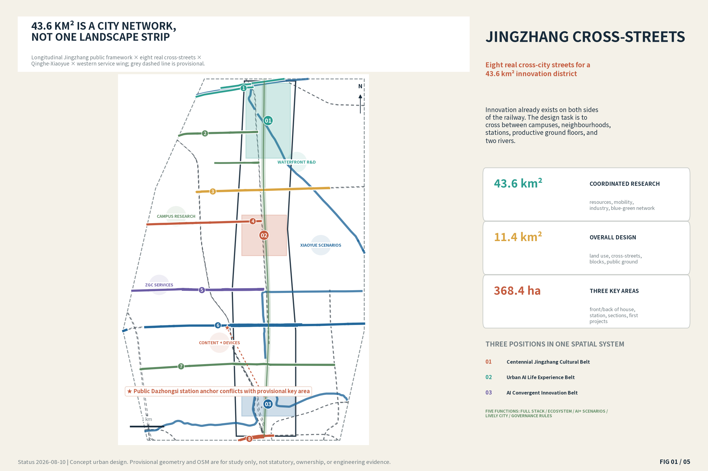
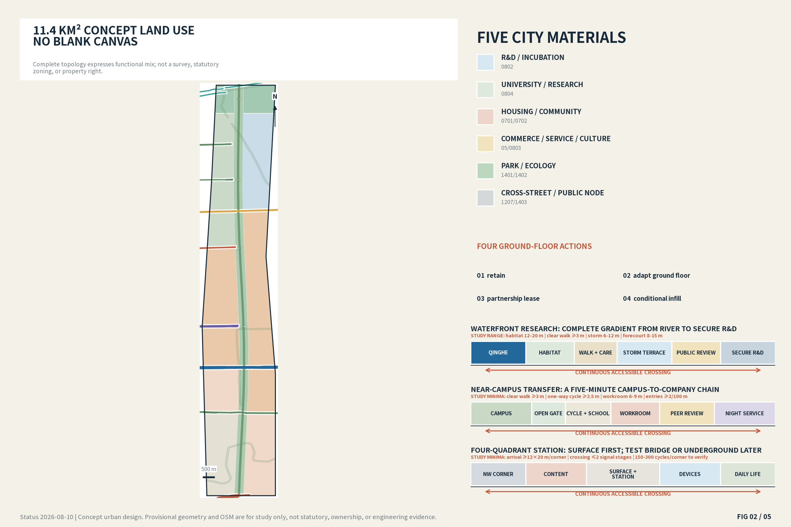
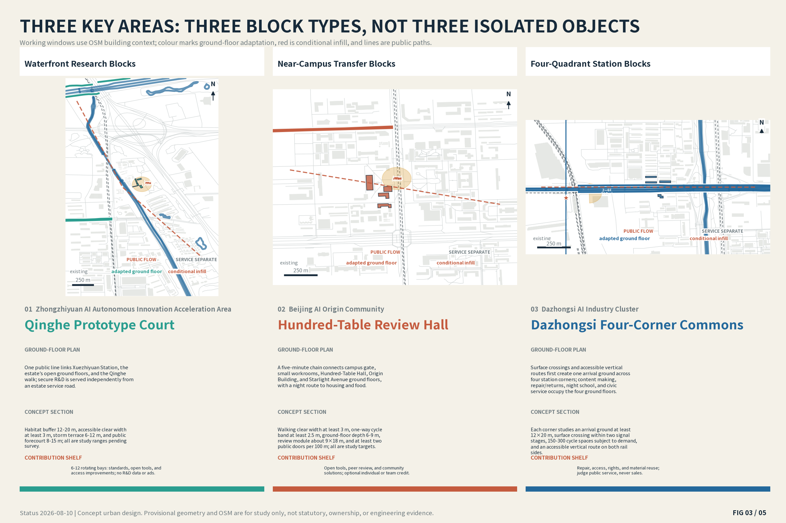
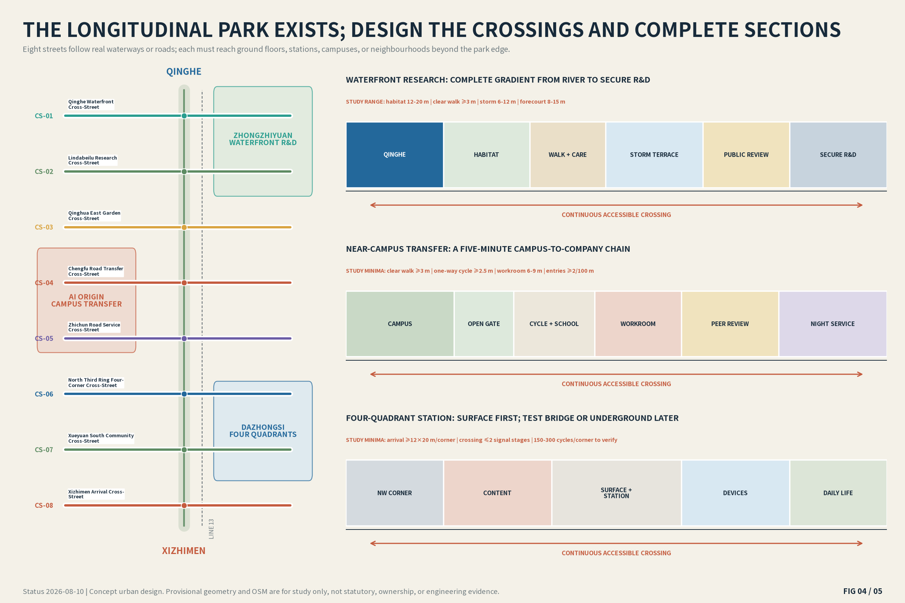
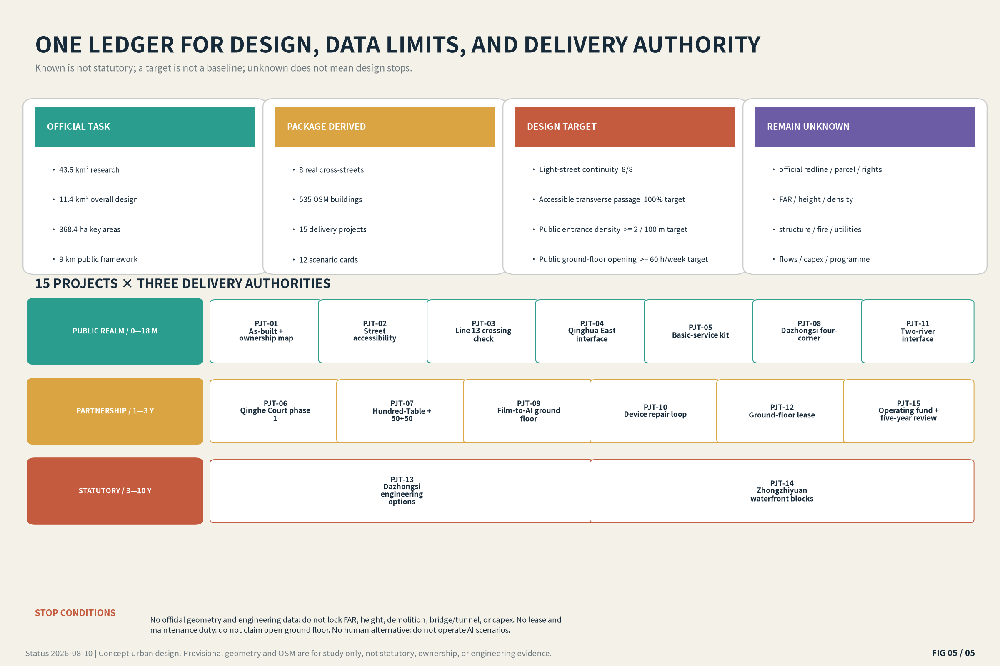

OVERVIEW MAP · THREE SCALES

THREE POSITIONS × FIVE FUNCTIONS × THREE AREAS + TWO WINGS
The three positions are public outcomes of one spatial system. The five functions form a loop from Zhongguancun services through Origin transfer, Zhongzhiyuan R&D, Dazhongsi content/devices, and bounded Xiaoyue scenarios—without a universal city-action ledger.
THREE POSITIONS
| POSITION | SPATIAL CARRIER | RESPONSE |
|---|---|---|
| Centennial Jingzhang Cultural Belt | Jingzhang Park, Beijing North Station, Qinghuayuan Station, bridges, tracks, and vertical relationships | Organise real heritage as platform-workbench-shared-table chapters without repeating railway motifs. |
| Urban AI Life Experience Belt | Stations, neighbourhoods, campus gates, public ground floors, and river interfaces on eight cross-streets | All twelve scenarios need real rooms, human alternatives, opening hours, and stop triggers; daily services are not displaced by display. |
| AI Convergent Innovation Belt | Campus research-Origin transfer-Zhongzhiyuan R&D-Dazhongsi content/devices-Xiaoyue civic scenarios | Join research, production, service, and civic use through walkable short chains, public-front/secure-rear sections, and controlled tests. |
FIVE FUNCTIONS
| FUNCTION | LOCATION | SPATIAL MOVE | ACCEPTANCE/BOUNDARY |
|---|---|---|---|
| Full-stack autonomous AI innovation system | Zhongzhiyuan + CS-01/02 | Shared-equipment booking, public review, a low-rise shared hall, and an independent secure R&D rear | opening hours, booking access, and public/service separation |
| World-class AI innovation ecosystem | AI Origin + Zhongguancun service wing + CS-04/05 | 50+50 desks, Hundred-Table Review, eight founder clinics, and daily talent services | first response, desk turnover, affordable rent, and team continuity |
| New AI+ scenario-enablement model | Xiaoyue scenario wing + controlled forecourts in three key areas | Four industrial tests and eight daily-service scenarios open only with space, staff, insurance, and stop triggers | card-level acceptance, human takeover, exit, and complaint closure |
| Intelligent and lively AI city | Eight cross-streets + Dazhongsi four corners + neighbourhood/campus gates | Transfer, school trips, night school, repair, childcare, water, toilets, and night staff form an everyday public ground | 8/8 continuity, rest points within 150 m, and basic services on 8/8 streets |
| Global voice in AI governance | Zhongzhiyuan standards workshops + cross-street scenario rules | Turn privacy impact, human alternatives, test suspension, repairable design, and accessible content into public rules and examples | no universal city-action tracking; review only specific voluntary scenarios |
LAND-USE STRUCTURE: A COMPLETE DISTRICT, NOT A LINEAR SLOGAN

EIGHT REAL CROSS-STREETS
| ID | CROSS-STREET | SUPPLY | GAP | FIRST DELIVERY |
|---|---|---|---|---|
| CS-01 | Qinghe Waterfront Cross-Street | Qinghe, Xiaoyue, Zhongzhiyuan, Xuezhiyuan Station | river works, estate edge, and station access remain separate | deliver one accessible station-estate-river line and dark-habitat section |
| CS-02 | Lindabeilu Research Cross-Street | Zhongzhiyuan, Tencent Xuezhiyuan, Dongsheng Phase III 604 | ground floors, shared equipment, and daily services are discontinuous | adapt one existing building row as public front and secure rear |
| CS-03 | Qinghua East Garden Cross-Street | Qinghua East project, Liudaokou, three universities, Xiaoyue | approved gardens, parking, and campus axes still need one Jingzhang interface | combine five parking areas, six gardens, and three campus axes in one interface plan |
| CS-04 | Chengfu Road Transfer Cross-Street | Wudaokou, Origin Building, TusPark, Zhiyuan Building | no visible short chain from research to desks, review, and company services | lease two ground floors for peer review and 50+50 open desks |
| CS-05 | Zhichun Road Service Cross-Street | Zhongguancun service wing, Zhichun Road Station, built park, neighbourhoods | professional services are dispersed and the Line 13 crossing remains unverified | open the eight-need clinic and verify the crossing on site and as-built drawings |
| CS-06 | North Third Ring Four-Corner Cross-Street | Dazhongsi Station, Third Ring, film/university resources, renewal group | crossings, vertical access, cycle parking, and ground floors are fragmented | deliver a surface-arrival package at each corner; test bridges or tunnels later |
| CS-07 | Xueyuan South Community Cross-Street | Beijing Jiaotong University, neighbourhoods, under-bridge space, Xueyuan South Road | school trips, older people’s rest, toilets, water, and repair are underserved | accept one child/caregiver route with basic services and under-bridge rooms |
| CS-08 | Xizhimen Arrival Cross-Street | Beijing North Station, Xizhimen hub, southern Jingzhang | transfer, luggage walking, historical opening, and all-day service lack one arrival ground | complete one luggage- and wheelchair-friendly arrival line and the first heritage chapter |
AI INNOVATION ECOSYSTEM MAP: EIGHT ENABLERS IN REAL SPACE
The data mechanism separates booking/consulting, R&D, and public information. Public space performs no persistent identification, and only human-reviewed aggregates are published.
| ELEMENT | SPATIAL CARRIER | MECHANISM | SAFEGUARD |
|---|---|---|---|
| Land | Existing estates, first street-facing rows, and conditional opportunity sites | Retain first, use short leases and ground-floor adaptation; replace the chain when official parcels and rights arrive | No acquisition, disposal, or land-price promise |
| Space | Public forecourt-accessible ground floor-secure rear | Three dimensioned section families, four building actions, and daily/event states | Concept only before structure, fire, heritage, and utility checks |
| Industry | Campus-Origin-Zhongzhiyuan-Dazhongsi-Xiaoyue | A walkable chain of research, review, prototyping, content/devices, repair/reuse, and civic scenarios | No invented companies, output, or investment promise |
| Funding | Basic public service, ground-floor leases, tests, and operating fund | Public funds secure access/care; owners secure ground floor/rear; testers fund insurance/clear-down; income pays accessibility→repair→free service→public programme | Responsibility proposal, not a fiscal commitment |
| Talent | 50+50 desks, Hundred-Table Review, housing links, and visiting desks | Move from open events into clinics, desks, equipment, prototypes, leases, or long partnerships | Guardrails are affordability, night safety, and incumbent retention |
| Compute | Compute clinics on CS-04/05 + controlled R&D rear | Public desks explain booking, price, and human support; training/R&D data stay with responsible secure operators | Capacity, heat reuse, and energy benefit await professional study |
| Data | Booking desks, service desks, controlled test rooms, and annual public summaries | Separate booking/consulting from R&D data; no persistent public identification; publish only opening hours, maintenance response, and human-reviewed aggregates | Purpose limitation, data minimisation, deletion, human appeal, and scenario-level stop |
| Scenarios | Real rooms and public routes for twelve scenario cards | Put responsible body, frequency/capacity, acceptance, human takeover, insurance, and stop trigger into each opening agreement | A test is not approved operation; anomalies stop it |
KEY AREAS: THREE BLOCK-SCALE PROTOTYPES

Waterfront Research Blocks
secure research rear + accessible review forecourt + Qinghe habitat edge
DAILYshared-equipment booking, lunchtime review, commuting, waterfront walking, and food
EVENTquarterly prototype open days and international standards workshops
Near-Campus Transfer Blocks
a short chain from campus gate to workroom, public review, incubation, and daily services
DAILYopen desks, legal and compute clinics, night study, childcare, and affordable food
EVENTweekly peer review, monthly street releases, and graduation residencies
Four-Quadrant Station Blocks
surface-first four-quadrant access + content production + intelligent devices + commuter life
DAILYtransfer, cycle parking, repair and returns, youth night school, and community services
EVENTsmall releases, public screenings, device trials, and sound-culture nights
CONTRIBUTION DISPLAY × CULTURAL NARRATIVE × INTERNATIONAL ITINERARY
Contribution shelves record only voluntary, rights-cleared, human-checked public work, with anonymity, correction, and withdrawal; they record no personal movement and create no personal leaderboard.
| NODE | DISPLAY | ROTATION |
|---|---|---|
| Qinghe Prototype Court | Public standards, open tools, accessibility improvements | 6-12 replaceable bays; quarterly rotation |
| Hundred-Table Review Hall | Open tools, peer review, mentoring, community problem-solving | Pinned up on review days, displayed for at most six months |
| Dazhongsi Four-Corner Commons | Repairable design, accessible content, rights compliance, material reuse | Reviewed by public-service outcomes, never sales ranking |
INTERNATIONAL NARRATIVE
From a historic corridor of Chinese railway engineering to an open cross-street network for solving problems together.
Arrive (Xizhimen) → Make Together (Chengfu) → Review in Public (Qinghe)
AI SCENARIOS: SEVEN USER GROUPS, TWELVE STOP TRIGGERS
USER GROUPS
| ID | USER | DAILY JOB |
|---|---|---|
| P-01 | University researcher / student | Find public review, shared desks, affordable food, and a safe return route within 15 minutes |
| P-02 | Solo founder and small team | Use workrooms by the hour and receive weekly legal, compute, hiring, and prototype support |
| P-03 | Hardware engineer and test operator | Keep logistics away from public flows while demonstrating and taking over manually in a controlled forecourt |
| P-04 | Neighbour and caregiver | Keep school trips, care, rest, drinking water, toilets, and daily shopping from being displaced by innovation events |
| P-05 | Wheelchair user and older person with limited mobility | Receive one continuous chain of crossings, station access, ramps, lifts, and rest points with human alternatives to digital service |
| P-06 | International visitor and partner | Arrive from Xizhimen or Xuezhiyuan, understand the district, book a visit, and enter public events without insider knowledge |
| P-07 | Park and district operator | Have real back-of-house space for storage, repair, night duty, waste sorting, event set-up, and complaints |
SCENARIO SPACE, CAPACITY, ACCEPTANCE, AND STOP
| ID | SCENARIO | SPACE | FREQUENCY/CAPACITY | ACCEPTANCE | STOP |
|---|---|---|---|---|---|
| SCN-01 | Controlled Prototype Review Street | Qinghe Prototype Court forecourt and closable test lane | monthly; one test lane; no more than 40 observers | every test records its boundary, takeover time, and clear-down | stop if the trial leaves its enclosure, manual stop fails, or the marshal leaves |
| SCN-02 | Low-Speed Campus Logistics Window | service lane, controlled crossings, and indoor hand-off lockers | two off-peak weekday hours; no more than four low-speed devices | zero obstruction of accessible paths and takeover within the declared time | stop on accessible/fire-route obstruction or two safety takeovers in one session |
| SCN-03 | Qinghe Habitat Observatory | dark river edge, stormwater terraces, and public observation points | continuous environment log; quarterly species check; no more than 12 people per point | lighting boundary, habitat continuity, and human verification coverage | stop if light crosses the dark boundary, sensors capture personal data, or storm alert triggers |
| SCN-04 | Street-Level Shared Equipment Booking | public booking desk, secure rear area, and waiting café | at least 60 weekday hours/week; 6-12 waiting seats | open hours, equipment utilisation, and access by small teams | stop on booking/research-data mixing, blocked public passage, or secure-rear failure |
| SCN-05 | Hundred-Table Peer Review | divisible longhouse, street-side spill-out, and quiet booths | two sessions/week; 40-100 demountable tables; 120-300 seats after fire approval | weekly open hours, cross-institution seats, and later tenancy conversion | stop on blocked egress, loss of public/confidential separation, or noise breach |
| SCN-06 | Distributed 50+50 Open Desks | two small ground floors five minutes apart rather than one new mega-incubator | 100 desks total; at least 60 hours/week; two ground floors within a five-minute walk | desk turnover, night safety, affordability, and team survival | stop if rent leaves the agreed affordable band, night staffing fails, or access breaks |
| SCN-07 | Eight-Need Founder Clinic | a sequence of small Chengfu Road rooms for policy, finance, compute, talent, partners, expertise, space, and scenarios | eight rotating service rooms; first response target within one working day | first-response time and conversion to long-term service | stop if public display identifies clients, no human professional is present, or conflicts are undisclosed |
| SCN-08 | Night Study and Care Chain | lighting, seating, and help points between station, campus gate, food, and talent housing | daily 18:00-23:00; rest points no more than 150 m apart | continuous lit frontage, a 150 m rest-point target, and human response | stop on loss of continuous light/help, nuisance glare, or an un-routed accessibility break |
| SCN-09 | Four-Quadrant Device Trial | four small indoor trial rooms and continuous surface crossing | quarterly trial week; four indoor rooms; no more than eight people per room | ease of exit, accessible use, and completed human after-sales service | stop without opt-in, on-site deletion, commuter exclusion, or human after-sales |
| SCN-10 | Film-to-AI Production Ground Floor | adjacent dubbing, captioning, audio description, small screening, and rights advice | two small screenings/month; no more than 80 seats; five daily production rooms | accessible-content share, rights completeness, and public screenings | stop if rights are incomplete, captions/audio description are absent, or sound/light breaches limits |
| SCN-11 | Device Repair and Circular Counter | one ground floor for repair, returns, parts, material recovery, and resale | eight daily repair benches; at least one accessible bench | repair rate, reuse rate, and affordable-service share | stop if personal data cannot be erased, battery risk cannot be isolated, or disposition is unrecorded |
| SCN-12 | Cross-Street Accessibility Relay | stations, ramps, crossings, rest points, toilets, and human desks on all eight cross-streets | quarterly recheck of all eight routes; panel of at least 12 including disabled users | route-by-route acceptance on all eight streets with user verification of closed issues | close the affected segment and repair when a safety break has no alternative route |
ACTIVE MOBILITY × BLUE-GREEN PUBLIC SPACE

BUILDINGS AND RENEWAL PROJECTS: FIFTEEN PROJECTS, THREE AUTHORITIES

| ID | PROJECT | ZONE | TIME | AUTHORITY |
|---|---|---|---|---|
| PJT-01 | As-built and ownership composite | ALL | 0-12 months | public |
| PJT-02 | Eight-street accessibility audit | ALL | 0-12 months | public |
| PJT-03 | Line 13 crossing verification | CS-05 | 0-12 months | public |
| PJT-04 | Qinghua East project interface | CS-03 | 0-12 months | public |
| PJT-05 | Cross-street basic-service kit | ALL | 0-18 months | public |
| PJT-06 | Qinghe Prototype Court phase 1 | KA-01 | 1-3 years | agreement |
| PJT-07 | Hundred-Table Hall and 50+50 desks | KA-02 | 1-3 years | agreement |
| PJT-08 | Dazhongsi four-corner walking and cycling | KA-03 | 1-3 years | public |
| PJT-09 | Film-to-AI production ground floor | KA-03 | 1-3 years | agreement |
| PJT-10 | Device repair and material loop counter | KA-03 | 1-3 years | agreement |
| PJT-11 | Qinghe and Xiaoyue interface prototypes | WATER | 1-3 years | public |
| PJT-12 | Ground-floor partnership lease | ALL | 1-3 years | agreement |
| PJT-13 | Dazhongsi station engineering options | KA-03 | 3-10 years | statutory |
| PJT-14 | Conditional Zhongzhiyuan waterfront blocks | KA-01 | 3-10 years | statutory |
| PJT-15 | Cross-street operating fund and five-year review | ALL | ongoing | agreement |
DEVELOPER COMMUNITY, SCENARIO OPENING, AND INTERNATIONAL CONVERSION
| STAGE | SPACE + ACTION | NEXT-STAGE CONDITION |
|---|---|---|
| Discover | Cross-Street Co-Test / Hundred-Table Review / Prototype Open Day / Repair and Reuse Month | Publish calendar, capacity, accessibility, and stop conditions together |
| Enter | Bilingual welcome desk + eight founder clinics + target of one human follow-up within 14 days | Participants choose a desk, professional service, equipment, or civic brief |
| Build | 50+50 open desks + shared equipment + four controlled industrial tests | Every project has an owner, insurance, human takeover, and exit |
| Convert | Public review→prototype/content→short ground-floor lease→long lease or partnership | Record pathway and affordability without promising investment outcomes |
| Contribute | Contribution shelves, mentor hours, civic problem briefs, and annual public KPIs | Record voluntary public contributions only; no personal scoring or universal city ledger |
EIGHT GATES FOR SCENARIO OPENING
Open call → rights/privacy/safety screening → real room/operator match → bounded sandbox → human go/no-go → limited public use → post-evaluation → stop/repeat/convert
INTERNATIONAL CONVERSION
Bilingual outreach → visit booking → peer review → bounded test → professional service/equipment → desk or short lease → long lease/research partnership; no investment, funding, policy, or approval promise.
CORE METRICS · TASK COVERAGE · SELF-CHECK STATUS
The sources, assumptions, and stop conditions below bound every claim.
Agent and announcement tasks mapped
Formal design-depth items addressed
Package self-check items
KEY ASSUMPTIONS
| ID | STATUS | IMPACT |
|---|---|---|
| A-BOUNDARY-001 | pending_official_geometry | Treat all zoning and area calculations as design research and rerun the entire package when official polygons arrive. |
| A-DZS-ANCHOR-001 | known_conflict | Show both the provisional rectangle and station working window; present neither as an official boundary. |
| A-PHASE2-001 | pending_as_built_verification | Design interfaces first and remove already delivered items after as-built and field verification. |
| A-OSM-001 | fit_for_context_only | Use it for working windows and route context only; ownership, redlines, storeys, height, and structure remain unknown. |
| A-LAND-USE-001 | conceptual_partition | Codes preserve professional semantics only and must be replaced by approved land-use evidence. |
| A-BUILDING-001 | pending_survey | Limit action to retain, ground-floor adaptation, partnership lease, and conditional infill; make no demolition decision. |
| A-HEIGHT-FAR-001 | unknown | Do not invent statutory figures; use three non-statutory envelopes to test ground relationships. |
| A-HERITAGE-001 | pending_official_gis | Avoid textually identified sensitive areas and require reversible, low-impact design plus professional review. |
| A-TRANSPORT-001 | concept_only | Prioritise surface and existing-link improvements at Dazhongsi; retain bridge and underground works as options requiring proof. |
| A-MUNICIPAL-001 | unknown | Reserve replaceable plant and coordination bands without promising capacity or energy savings. |
| A-OPERATION-001 | proposal_not_commitment | Keep them as concept proposals; publication, leasing, contracts, and live scenarios each need separate authority. |
| A-PRIVACY-001 | human_review_required | Require data minimisation, human alternatives, stop triggers, and voluntary participation; no persistent public-space identity tracking. |
| A-STATUS-DATE-001 | time_bounded | Recheck before submission because new notices, starts, and completions can change priorities. |
SOURCE REGISTER
| ID | PUBLISHER | DATE | USE |
|---|---|---|---|
| SITE-PACKAGE | open-city-ai/haidian | 2026-08-10 | Task brief, enums, standards, provisional geometry, and validation rules. |
| SOURCE-REGISTRY | open-city-ai/haidian | 2026-08-09 | Classifies sources as formal, background, provisional, or needs-review. |
| BOUNDARY-SOURCE | open-city-ai/haidian | 2026-08-10 | Provisional topology, generation, and visualisation. |
| KEY-AREA-SOURCE | open-city-ai/haidian | 2026-08-10 | Provisional key-area quantities and validation. |
| OFFICIAL-ANNOUNCEMENT | Beijing Municipal Commission of Planning and Natural Resources, Haidian Branch | 2026-05-09 | Formal 43.6 km², 11.4 km², 368.4 ha scope, three-area tasks, and deliverable depth. |
| AGENT-TASKBOOK | open-city-ai/haidian | 2026-08-10 | Six Agent tasks, three positions, five functions, three areas and two wings, and boundary rules. |
| BJ-THREE-AREAS-WINGS | Beijing Municipal Government Portal | 2026-04-03 | Three areas and two wings, Xuebeiyuan background, and the earlier 37 km² publicity figure. |
| BJ-HERITAGE-PARK-PLANNING | Beijing Municipal Commission of Planning and Natural Resources | 2021-12-16 | Nine-kilometre park, Line 13 vertical conditions, university context, staged delivery, and co-creation. |
| BJ-PARK-PHASE1 | Beijing Municipal Government Portal | 2023-06-30 | Phase 1 length and area, heritage retention, under-bridge reuse, and sponge-city baseline. |
| BJ-PARK-PHASE2 | Beijing Municipal Forestry and Parks Bureau | 2026-07-13 | Completion of supporting works, 30.01 ha north section, fishbone active travel, and neighbourhood nodes. |
| BJ-QINGHUA-EAST | Beijing Municipal Government Portal | 2026-06-02 | Approved Qinghua East project, five cycle parks for about 1,900 cycles, six gardens, three campus axes, and 2027 target. |
| BJ-WATERWAYS | Beijing Water Authority | 2025-07-08 | Qinghe and Xiaoyue project lengths, waterfront paths, and planting works. |
| BJ-WATERWAYS-PROGRESS | Haidian Water Authority | 2026-05-29 | Construction progress on Qinghe and Xiaoyue works. |
| BJ-ZZY-RENEWAL | Beijing Urban Renewal Service Platform | 2026-07-13 | Zhongzhiyuan renewal group, three anchors, edges, and renewal types. |
| BJ-DZS-RENEWAL | Beijing Urban Renewal Service Platform | 2026-07-13 | Dazhongsi renewal group, existing-stock types, boundary, and implementation body. |
| BJ-AI-ORIGIN | Haidian District Government | 2026-03-24 | AI Origin scale, open desks, age profile, talent housing, and operating needs. |
| BJ-AI-ORIGIN-PHYSICAL | Beijing Municipal Government Portal | 2026-04-01 | Origin Building, Starlight Avenue, F block, and the vacated-site opportunity. |
| BJ-QINGHUAYUAN-PROTECTION | Beijing Municipal Cultural Heritage Bureau | 2026-02-14 | Qinghuayuan Station protection area and construction-control requirements. |
| HAIDIAN-URBAN-RENEWAL-GUIDE | Haidian District Government | 2025-07-16 | Mixed use, open ground floors, permeable edges, rail micro-centres, youth housing, resilience, low carbon, and delivery. |
| BEIJING-GREENWAY-GUIDE | Beijing Municipal Commission of Planning and Natural Resources | 2025-07-25 | Greenway scenarios, entrances, active travel, and railway-heritage interpretation. |
| PRC-ACCESSIBILITY-LAW | State Council of the PRC | 2023-06-28 | Continuous accessibility, coordinated construction, accessible information, user participation, and maintenance duties. |
| MOHURD-URBAN-DESIGN-MEASURES | Ministry of Housing and Urban-Rural Development | Public space, form, character, heritage, and people-centred urban design. | |
| MOHURD-CONTROL-DETAILED-PLANNING | Ministry of Housing and Urban-Rural Development | Statutory controls, protected lines, and proposed-versus-pending boundaries. | |
| MNR-LAND-USE | Ministry of Natural Resources | Land-use codes and classification. | |
| CAC-GEN-AI | Cyberspace Administration of China | Boundaries and responsibilities for generative-AI services. | |
| OSM-20260810 | OpenStreetMap contributors | 2026-08-10 | Dated street, rail, water, station, and building context for three design windows. |
| CASE-RAIL-CORRIDOR | NParks Singapore | Linear-heritage segmentation, entrances, and dark habitat. | |
| CASE-ONE-NORTH | JTC | Innovation-district mix, public space, and estate operations. | |
| CASE-KASHIWA | Mitsui Fudosan | University-business-government-resident governance and a staffed urban-design centre. | |
| CASE-22AT | Barcelona City Council | Block mix, housing and facilities, and green-street revision. | |
| CASE-KINGS-CROSS | King's Cross Estate | Public-space-first delivery, heritage reuse, and long-term operation. | |
| CASE-RIVE-GAUCHE | SEMAPA | Rail severance, university integration, and long phased delivery. | |
| CASE-YANGPU | Shanghai Yangpu District | Continuous walking-running-cycling paths, industrial heritage reuse, and staged opening. | |
| CASE-NAVY-YARD | Brooklyn Navy Yard Development Corporation | Retained production, shared facilities, jobs, and non-profit operation. | |
| REFERENCE-URBANOS | UrbanOS Studio / open-city-ai gallery | Completeness benchmark only. | |
| NOTO-SANS-SC | Google Fonts / Noto project | Openly licensed Chinese font used in figures and PDFs. |